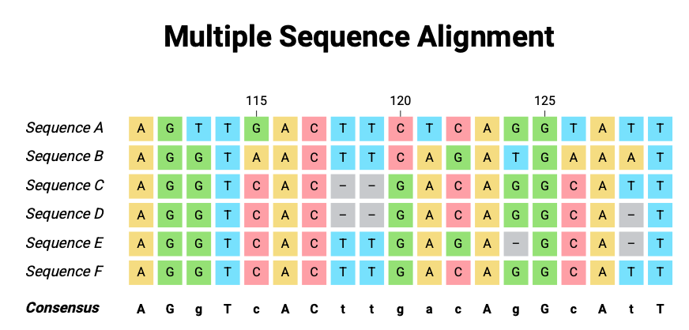
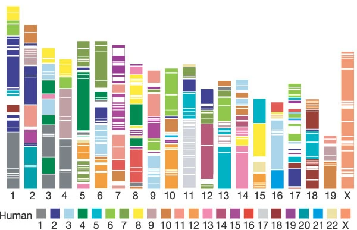

4 Evolution-Aware Encoders
In this chapter, we’ll evaluate the architecture of natural language models, which we have up to this point uncritically adopted for DNA modeling from our NLP/corporate brethren. We’ll discuss how some researchers have begun to move on from applying known model architectures to DNA and started to (re)designing model architectures specifically with DNA in mind. These models lean into our very extensive knowledge of the evolutionary history of the Genome.
In this chapter, we are forced to confront some fundamental questions: what is prediction? What do we want a model to learn?
All scripts for this chapter are found here: https://github.com/MichelNivard/Biological-language-models/tree/main/scripts/DNA/Chapter_4
4.1 Introduction
In previous chapters, we introduced the basic principles of BERT for DNA sequences. We took inspiration from natural language processing (NLP), treating DNA as a language, where sequences of nucleotides (A, T, C, G, -) could be processed using transformers. This approach, while powerful, carries over several assumptions from natural language that do not perfectly align with biological sequences. In this chapter, we will re-examine how we encode genomic data and introduce a new design paradigm — evolutionary-aware encoding — inspired by the recently proposed GPN (Genomic Pre-trained Network).
4.2 Tokenization and Embedding in Language Models
Modern language models, whether BERT, GPT, or similar architectures, rely heavily on how input sequences are tokenized and encoded before they ever reach the attention layers. This initial step — often overlooked — plays a profound role in shaping how the model learns.
4.2.1 Tokenization in Natural Language
In human languages like English or French, the vocabulary is large, often comprising tens of thousands of tokens. These tokens could be:
- Whole words (“cat”, “sat”).
- Subwords (“cat” might break into “c”, “at”).
- Even characters (in rare cases).
Since the number of tokens is so large, each token is assigned a unique vector embedding — a dense, learnable representation of its “meaning”. These embeddings are gradually refined during training as the model learns how tokens behave in different contexts. The model learns, based on the massive amounts of training data, what the word means, what other words have similar or related meanings. This is essential because linguists and those who study language have vast knowledge of word meaning, numerically encoding that knowledge so that a computational model could process isn’t currently a feasible task. Therefore, in a natural (as opposed to biological) large language model, word embeddings are learned from the data, the data being all the text on the internet.
4.2.2 The Embedding Process (NLP BERT)
Input Sentence: "The cat sat on the mat"
Step 1 - Tokenization:
["The", "cat", "sat", "on", "the", "mat"]
Step 2 - Lookup:
Each token gets a fixed vector from an embedding table.
"The" -> [0.25, 0.13, -0.11, ..., 0.04]
"cat" -> [0.88, -0.23, 0.45, ..., -0.67]
Step 3 - Transformer Layers:
These embeddings are updated based on surrounding words (context).4.2.3 Language Evolution is Decayed
The design of these token embeddings reflects a key fact about human languages: the evolutionary history of words might be relevant to understanding their meaning today, but the words’ context in text is way more informative. While linguistic etymology exists, the meaning of “cat” today does not rely on whether the word originated from Latin or Proto-Indo-European. Context (the words around “cat”) matters far more than distant etymology. Even if I am unfairly discounting the importance of etymology in linguistics (I am no linguist, don’t take my word for it), the quantity of older texts, relative to the quantity of modern texts, the lack of an obvious coding scheme for embedding a word in its etymological history are problematic and would have to be very effective given how effective “word in textual context” embeddings are. However, biology, and DNA in particular, is different.
4.2.4 Biological Sequences are Fundamentally Different
The DNA encoding we have been working with (A, T, G, C, -) has 5 tokens, perhaps 20 if we encode all the codes used in genetics to code for ambiguous or missing bases. Protein language models we’ll cover later have ±20 amino-acids commonly found in proteins. If we use longer vocabularies, like k-mer or BPE tokenizer vocabularies, it’s not clear the longer sequences we obtain really are comparable or interchangeable. The point of embedding is to cluster similar and dissimilarities, in order to predict the next or a masked token if the presence of up to 128,000 tokens to choose from, some of which have very similar meanings or could fully alter the meaning of a sentence (by negation or omission). In biology, we have a small vocabulary, 5 or 20, or if you wish up to a few hundred tokens. We do, however, have an incredible understanding of the evolutionary history (Figure 4.1) of each base in the genome, we know its place in the genome of other species and can align those to each other!

4.2.5 Evolutionary Context as an Embedding
The evolutionary history of a genomic position — how conserved it is, how it varies across species — directly influences our estimation of its importance and its tolerance to mutation. A nucleotide in a highly conserved enhancer region requires different levels of attention (from the model or us scientists) than a nucleotide in a rapidly evolving spacer.
4.2.6
| Aspect | Natural Language | Genomics |
|---|---|---|
| Number of Tokens | Tens of thousands | ~5 (A, T, G, C, -) |
| Meaning | Flexible, evolves over time | Biochemically fixed |
| Evolutionary Context | Mostly irrelevant to meaning | Often crucial (conservation, divergence) |
| Token Embedding | Fully learned | No unique encoding for each token, but predefined based on token-specific evolutionary history |
| Neighboring Context | Defines meaning | Defines local motifs, but evolutionary context adds extra layer |
To capture this cross-species evolutionary context, we need an embedding strategy that combines:
- The identity of the nucleotide itself (A, T, G, C, -).
- The state of this position in aligned species (what bases appear at the same position in other species).
This evolutionary-aware encoding is at the heart of the Genomic Pre-trained Network (GPN) architecture and various famous protein language models like AlphaFold(Benegas et al. 2023; Lupo, Sgarbossa, and Bitbol 2022; Jumper et al. 2021). In DNA networks, we’ll discuss in this chapter, the encoding is computed for each base given its history. So while the model has 5 tokens (G, C, T, A, and -), these tokens do not map to a fixed embedding; rather, the base “A” maps to an encoding (one-hot encoding) for A, but then also for the same base in aligned sequences of 99 non-human species. This fundamentally changes the model architecture, changing it from a language model applied to DNA as we did in Chapter 3 to a DNA language model, or maybe even just a DNA model.
4.3 4. Introducing GPN-MSA-BERT
GPN-MSA-BERT (inspired by Benegas et al. (2023)) adapts BERT-style masked language modeling (MLM) to DNA sequences, but incorporates multispecies alignment (MSA) data directly into the model’s input.

4.3.1 Key Idea: Dynamic Position Embeddings
For each position in the human genome, the model receives:
- The human base (A, T, G, C, -) — this is the usual input.
- The aligned bases from other species — these are additional features.
- These aligned bases are one-hot encoded and concatenated to the human base’s embedding.
This turns a simple nucleotide embedding, for any given nucleotide, into a dynamic, position-specific vector that depends on its evolutionary context across species.
4.3.2 Visualization
Human Position: A
Aligned Species: A G A (species 1, species 2, species 3)
Embedding:
[ OneHot_A | OneHot_A | OneHot_G | OneHot_A ]This combined vector captures:
- What the human base is.
- How conserved the site is.
- Which substitutions are tolerated across species.
4.3.3 Practical Implementation - Replacing the BERT Encoder
To implement this in practice, we can directly modify a Hugging Face model class (like ModernBertForMaskedLM) to use our custom GPNEmbedding layer in place of the standard token embedding layer.
This requires:
- Defining a tokenizer that tokenizes each base and aligned bases in other species into the structure expected by the embedding.
- Defining a GPNEmbedding class that can handle one-hot human base with species features and builds the embedding for each base.
- Replacing
ModernBertForMaskedLMwith a customGPNBERTMaskedLMclass. - Ensuring all
forwardmethods accept bothinput_idsandaux_features, which are passed into the embedding layer. - We additionally define our own tokenizer and data collator (not shown here but available in the full script).
The code below takes a human sequence, encodes it in a one-hot encoding (so A: 10000, T: 01000, G: 00100, C: 00010, -: 00001 for example), does the same for any auxiliary aligned sequences from other species. Then the embedding function combines both into one.
# --------------------------------
# 5. Encode Human and Auxiliary Species Sequences in
# --------------------------------
def one_hot_encode_base(base):
"""One-hot encodes A, T, G, C, - (5 bases total)."""
base_to_idx = {"A": 0, "T": 1, "C": 2, "G": 3, "-": 4}
one_hot = np.zeros(5, dtype=np.float32)
if base in base_to_idx:
one_hot[base_to_idx[base]] = 1.0
return one_hot
def tokenize_with_aux(examples):
human_seq = clean_sequence(examples["human_sequence"])
# Drop first 10 species (closest relatives)
species_seqs = [clean_sequence(seq) for seq in examples["species_sequences"]]
species_seqs = species_seqs[10:] # <-- This line omits the first 10 species
# Tokenize human sequence
tokens = hf_tokenizer(human_seq, truncation=True, padding="max_length", max_length=512)
input_ids = tokens["input_ids"]
# Process species sequences into concatenated one-hot vectors (aux features)
seq_len = len(input_ids)
num_species = len(species_seqs)
aux_features = np.zeros((seq_len, num_species * 5), dtype=np.float32)
for pos in range(seq_len):
if pos >= len(human_seq): # Handle padding case
break
for species_idx, species_seq in enumerate(species_seqs):
if pos < len(species_seq):
aux_features[pos, species_idx * 5:(species_idx + 1) * 5] = one_hot_encode_base(species_seq[pos])
tokens["aux_features"] = aux_features.tolist()
return tokens
# --------------------------------
# 8. Define GPNEmbedding
# --------------------------------
class GPNEmbedding(nn.Module):
def __init__(self, config, n_species):
super().__init__()
self.config = config
self.n_species = n_species
self.vocab_size = 5 # A, T, G, C, -
self.species_feature_size = n_species * self.vocab_size
def forward(self, input_ids, aux_features):
one_hot = F.one_hot(input_ids, num_classes=self.config.vocab_size).float()
# Combine human one-hot with species aux_features
combined = torch.cat([one_hot, aux_features], dim=-1)
if combined.shape[-1] < self.config.hidden_size:
pad = self.config.hidden_size - combined.shape[-1]
combined = F.pad(combined, (0, pad))
return combinedFrom here on out, things are fairly standard. A transformer model (here BERT but could be anything really) is initialized to learn the relationship between adjacent tokens using a masked language model training regime. In the code below, the custom embeddings are introduced into the masked language model (ModernBert in this case) while the encoder part of the model (the core part of the model that learns the relation between adjacent tokens) remains unchanged.
# --------------------------------
# 6. GPNBERTMaskedLM
# --------------------------------
class GPNBERTMaskedLM(nn.Module):
def __init__(self, config, n_species):
super().__init__()
self.config = config
self.n_species = n_species
self.vocab_size = 5 # A, T, G, C, -
self.species_feature_size = n_species * self.vocab_size
self.encoder = ModernBertModel(config) # Directly initialize the transformer backbone
self.cls = nn.Linear(config.hidden_size, config.vocab_size)
self.embedding = GPNEmbedding(config, n_species)
def forward(self, input_ids=None, aux_features=None, labels=None, **kwargs):
embeddings = self.embedding(input_ids, aux_features)
# Only pass valid args to the encoder
encoder_kwargs = {k: v for k, v in kwargs.items() if k in {"attention_mask", "position_ids", "head_mask"}}
outputs = self.encoder(inputs_embeds=embeddings, **encoder_kwargs)
sequence_output = outputs.last_hidden_state
prediction_scores = self.cls(sequence_output)
loss = None
if labels is not None:
loss_fct = nn.CrossEntropyLoss(ignore_index=-100)
loss = loss_fct(prediction_scores.view(-1, self.config.vocab_size), labels.view(-1))
return MaskedLMOutput(
loss=loss,
logits=prediction_scores,
hidden_states=outputs.hidden_states,
attentions=outputs.attentions,
)4.4 What are we masking?
I promised we’d have to deeply consider what we count as prediction, and that’s going to have to happen right now. In Chapter 2, we trained a DNA language model, and in Chapter 3, we saw how well it did and did not predict specific features. In Figure 3.3, you saw the model predicts the true bases in the DRD2 gene with about 40%. What if I told you I can predict the bases in the human reference genome with > 95% probability with a “model” based on a supervised model? To do so, I’d just pick the consensus base across other species! Human DNA and chimpanzee DNA are > 90% identical, and human and mouse genomes are remarkably similar (85%, I think). In Figure 4.3 (from (“Initial Sequencing and Comparative Analysis of the Mouse Genome” 2002)), we see the human sequences that are preserved well in the mouse genome, and they cover a staggering portion of it. This means we can “beat” base predictions made by our previous model by a mile, simply by picking the base that is most frequent across evolutionary history.

In training our GPNBert model with auxiliary sequences, we train by masking the human base only (following (Benegas et al. 2023)). This very obviously and dramatically improves base prediction, and does so very quickly. After a few hundred iterations (trained on about 5,000 genes), the model learns that it should just assign the base most often found in other species. But as the evaluations in the original GPN-MSA paper make clear, eventually the model learns more than that. The model outperforms just picking the consensus base across species. They are able to show fairly convincingly that the predicted probabilities are a better predictor of the allele frequency in humans than just picking the allele frequency across species (Figure 2B in Benegas et al. (2023)) as an estimate of the allele frequency within humans. Furthermore, their model is able to identify deleterious mutations better than CADD scores, based on supervised machine learning ((Rentzsch et al. 2021)), or than sophisticated evolutionary constraint scores ((Sullivan et al. 2023)).
4.5 Recap of Our Approach
In Chapter 2, we trained a vanilla BERT on DNA sequences alone — treating DNA as just another language. That model only had access to the human sequence, with no evolutionary context.
In this chapter, we’ve re-imagined that process. Instead of treating A, T, G, C, - as abstract symbols, leaving the model entirely unsupervised when picking embeddings, we inject evolutionary history directly into the embedding. This allows our model to:
- Use the aligned species data as a rich evolutionary prior.
- Still leverage transformers for learning sequence motifs.
- Predict masked human bases using both local sequence and cross-species evolutionary patterns.
4.6 Preview of Chapter 5
In Chapter 5, we will put these two models — Vanilla BERT and GPN-BERT — to the test. We will evaluate their performance on:
- Predicting masked bases (MLM accuracy).
- Predicting the functional impact of mutations.
This head-to-head comparison will highlight the strengths and weaknesses of each approach and show the value of embedding evolutionary context directly into genomic language models.